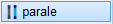
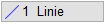
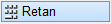
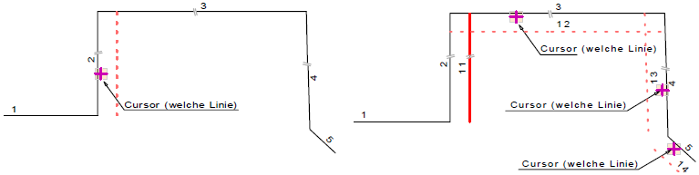

")
")
Die Anfangs- und Endpunkte werden parallel zur Bezugslinie um den eingegebenen Betrag oder frei verschoben.
Strichtyp und Liniendarstellung (Stift) der parallelen Linie können im Funktionsbereich gewählt oder mit der so wie-Funktion von einem anderen Element übernommen werden.

Siehe auch: |


|
Tipp: |
|
Zum Zeichnen von Wänden o. Ä., die aus mehreren parallelen Linien bestehen, empfehlen wir die Funktion Wände zeichnen [Konst2 | Wandze] oder die Funktion Wandumfahrung [Konst2 | Wandum]. |

Optionen
 |
Zeichnet eine parallele Linie zur Bezugslinie. |
Zeichnet mit jedem Klick eine parallele Linie zur vorhergehenden Parallelen. |
|
|
Zeichnet Parallelen zu mehreren Bezugslinien. |

Die Lage der Parallelen wird beim Anklicken der Bezugslinie durch die Position des Cursors bestimmt. Wenn Sie die Bezugslinie z. B. auf der linken Seite anklicken, wird die Parallele links von der Bezugslinie erzeugt. Die Eingabe eines negativen Wertes ist nicht möglich.
Um eine einzelne Parallele zu einer Bezugslinie zu zeichnen
§Stellen Sie sicher, dass in der oberen linken Ecke [1 Linie] aktiviert ist. §Klicken Sie die Bezugslinie auf der Seite an, zu welcher die Parallele erzeugt werden soll. [Welche Linien(n)]. §Geben Sie einen positiven Wert für den Abstand der Parallelen zur Bezugslinie ein und bestätigen Sie mit der Eingabetaste. [Wert eing. / Punkt andr. / frei]. –Sie können die Parallele auch frei zeichnen (Linksklick) oder einen Punkt fangen, durch den die Parallele gezeichnet werden soll. –Die Parallele wird gezeichnet. Sie können sofort eine weitere Bezugslinie wählen. |
Um mehrere parallele Linien nacheinander zu zeichnen
§Klicken Sie in der oberen linken Ecke auf [n Linien]. [Welche Linie(n)]. §Fahren Sie mit dem Cursor auf die Bezugslinie und klicken Sie diese an. [Welche Linie(n)]. §Geben Sie einen positiven Wert für den Abstand der ersten Parallelen zur Bezugslinie ein und bestätigen Sie mit der Eingabetaste. [Wert eing. / Punkt andr. / frei]. –Bei einem weiteren Betätigen der Eingabetaste wird eine weitere Parallele mit dem angegebenen Abstand zur vorhergehenden Parallelen gezeichnet. Geben Sie ggf. einen neuen Abstand ein. –Sie können die Parallelen auch nacheinander frei zeichnen (Linksklick) oder einen Punkt fangen, durch den eine Parallele gezeichnet werden soll. §Klicken Sie auf |
 , um das Zeichnen der Parallelen zu beenden.
, um das Zeichnen der Parallelen zu beenden.Um parallele Linien zu mehreren Bezugslinien zu zeichnen
 |
§Klicken Sie im Funktionsbereich auf [Retan]. §Klicken Sie nacheinander die Linien an, zu denen Parallelen erzeugt werden sollen. §Wählen Sie [1 Linie], um nur einmal parallel zu zeichnen oder [n Linien], um mehrmals Parallelen zu den angeklickten Linien zu zeichnen. §Bestätigen Sie die Auswahl mit Rechtsklick. §Geben Sie einen positiven Wert für den Abstand der Parallelen zur Bezugslinie ein und bestätigen Sie mit der Eingabetaste. [Wert eing. / Punkt andr. / frei]. –[n Linien]: Bei jedem weiteren Betätigen der Eingabetaste werden weitere Parallelen mit dem angegebenen Abstand gezeichnet. –Sie können die Parallelen auch nacheinander frei zeichnen (Linksklick) oder einen Punkt fangen, durch den eine Parallele gezeichnet werden soll. |
Um eine Parallele über einen Bezugspunkt zu zeichnen (Kreis/Teilkreis)
§Fahren Sie mit dem Cursor auf die Bezugslinie und klicken Sie diese an. [Welche Linie(n)].
§Klicken Sie den Kreis (Mittelpunkt) oder Teilkreis (Anfangs- und Endpunkt) an. [Wert eing. / Punkt andr. / frei].
Die Schaltflächen Punkt und Tangen werden aktiv.
|
Die Parallele wird durch den Mittelpunkt gelegt. Bei Teilkreisen wird die Parallele ebenfalls durch den Mittelpunkt gelegt, wenn Sie das mittlere Drittel angeklickt haben. Ansonsten wird die Parallele durch den näher liegenden Punkt gezeichnet. |
|
Die Parallele wird tangential an den Kreis oder Teilkreis gelegt. Bei Kreisen wird die Lage der Tangente durch die Lage des Cursors bestimmt. |


Nutzen Sie die Differenzfunktion [Retan] um zum Zielpunkt noch einen Abstand anzugeben.
§Klicken Sie eine der Schaltflächen an, um die Parallele zu zeichnen.
Die Parallele wird gezeichnet. Sie können sofort eine weitere Bezugslinie wählen.
Beispiel:
Benutzen Sie die linke und rechte Maustaste im Wechsel für das Anklicken der Bezugslinie und Bestätigung des Abstands.
 |
Zugehörige Referenzen: